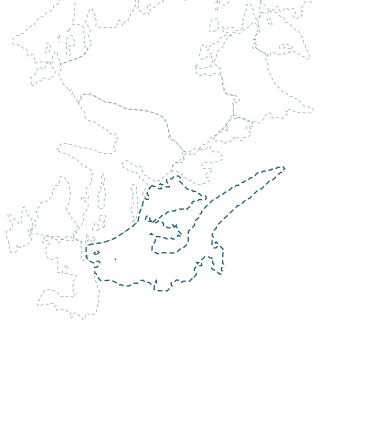

HintereisfernerÖtztaler Alpen · AT · 5,17 km² (2022)

Hintereisferner
{{snowLabel}}
SCHMELZE HEUTEModell
{{h.melt}}{{h.meltWhere}}
{{h.meltSub}}
Nullgradgrenze{{h.zero}}Modell, 14 Uhr
Obergurgl 1 941 m{{h.obs}}gemessen
Nächste 7 Tage
{{d.day}}
{{d.v}}
{{h.unitNote}} · Modell aus buscosun Fusion, Mockup-Werte
Höchste Schneegrenze3 480 mSatellit · 27.08.
AAR Saisonende0,12Satellit · 2024/25: 0,24
Gletscherschwundtag04.07.Modell
Bilanz 2025/26−2,5 m w. e.Modell · −2,1 bis −2,9
Gemessen 2024/25: −1 793 mm w. e., Gleichgewichtslinie 3 302 m (Universität Innsbruck).
Kein Urteil über Begehbarkeit. Verhältnisse bei Hütte und Bergführern erfragen.
{{t.night}}{{t.nightSub}}
{{t.surface}}{{t.surfaceSub}}
alpenvereinaktiv.com · Sperrungen↗
Webcams in der Umgebung (Link)↗
Fläche 2003 → 2022−36 %gemessen
Länge 1847 → 2003−2 918 mgemessen
Wann ist er weg?Unter 10 % des Volumens von 2020: 2048–2058, je nach Szenario.Modell GloGEM · Beispielwerte